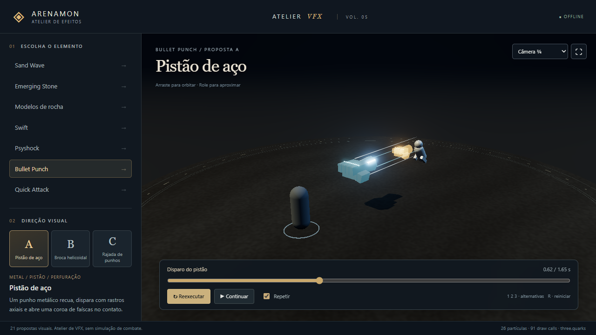
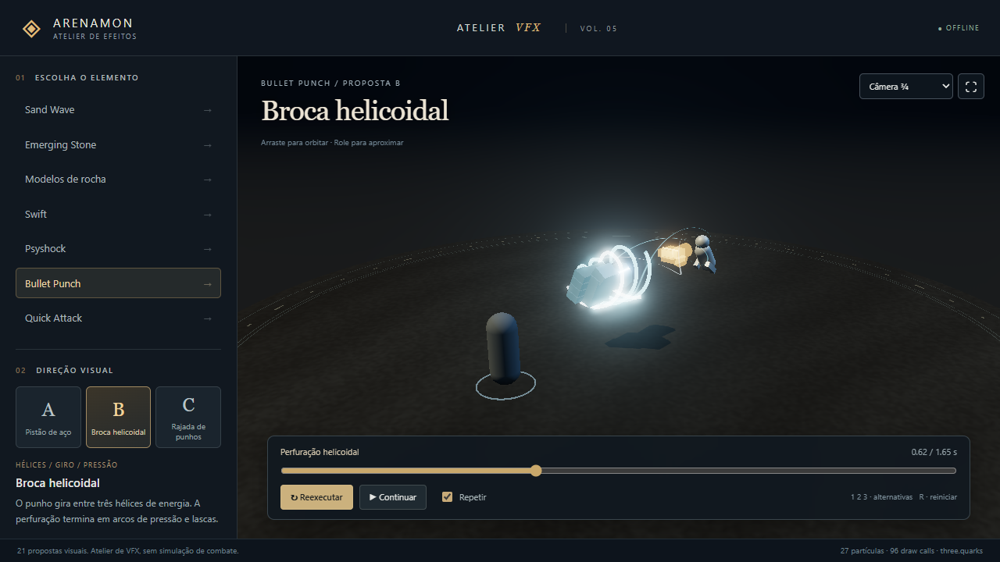
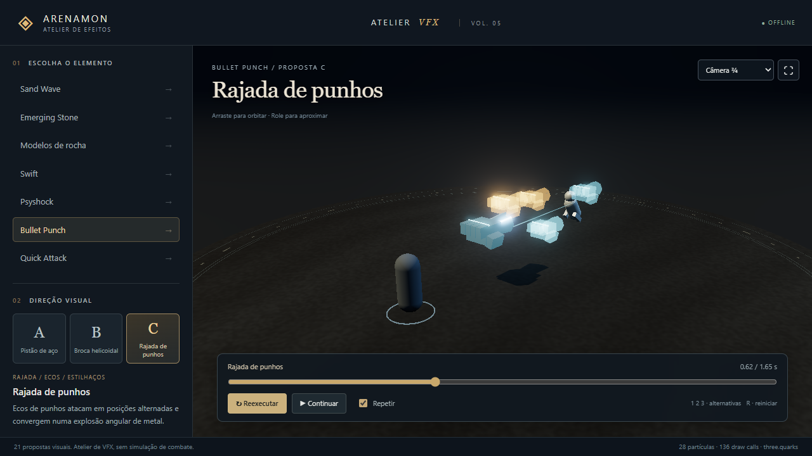
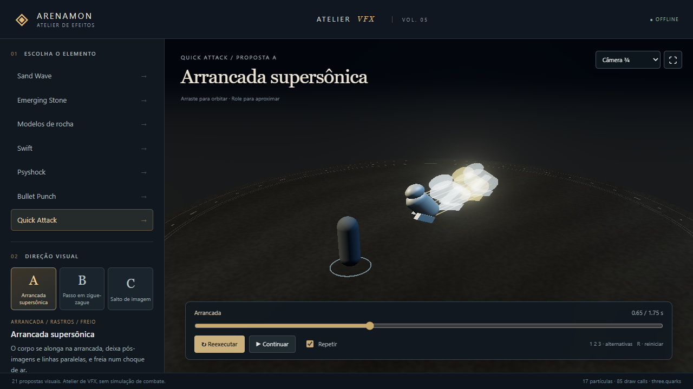
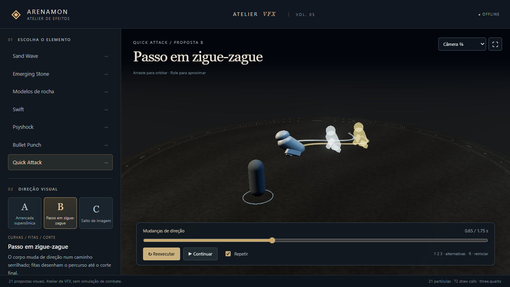
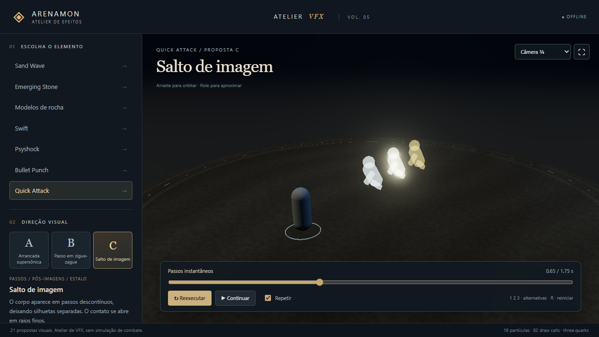

Atelier VFX · revisão 5← Portal Arenamon · Abrir atelier animadoBullet Punch e Quick Attack · VOL. 05
Capturas reais a 720p, com o mesmo enquadramento. Selecione uma fase e clique na imagem para ampliar. Prévia artística, sem mudança nas regras de combate.
BULLETPUNCH · A
Pistão de aço

BULLETPUNCH · B
Broca helicoidal

BULLETPUNCH · C
Rajada de punhos

QUICKATTACK · A
Arrancada supersônica

QUICKATTACK · B
Passo em zigue-zague

QUICKATTACK · C
Salto de imagem
